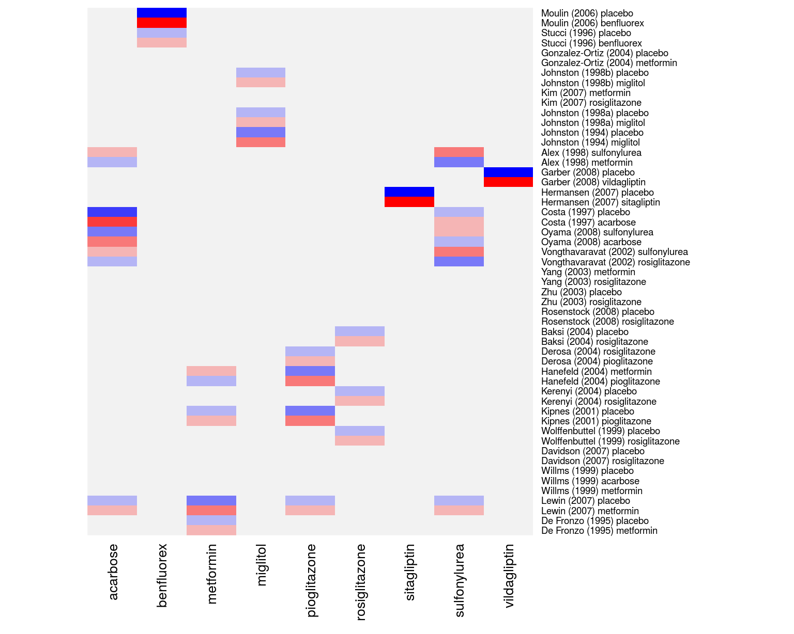

Studies on the Effectiveness of Glucose-Lowering Agents
dat.senn2013.RdResults from 26 trials examining the effectiveness of glucose-lowering agents in patients with type 2 diabetes
dat.senn2013
Format
The data frame contains the following columns:
| study | character | (first) author and year of study |
| ni | numeric | sample size of the study arm |
| treatment | character | treatment given |
| comment | character | whether figures given are based on raw values at outcome or on change from baseline |
| mi | numeric | mean score |
| sdi | numeric | standard deviation |
Details
The dataset includes the results from 26 randomized controlled trials examining the effectiveness of adding various oral glucose-lowering agents to a baseline sulfonylurea therapy in patients with type 2 diabetes. The outcome measured in the studies was either the mean HbA1c level at follow-up or the mean change in HbA1c level from baseline to follow-up. A total of 10 different treatment types were examined in these studies: acarbose, benfluorex, metformin, miglitol, pioglitazone, placebo, rosiglitazone, sitagliptin, sulfonylurea alone, and vildagliptin. One study included three treatment arms (Willms, 1999), while the rest of the studies included two treatment arms (hence, the dataset includes the results from 53 treatment arms).
The data can be used for a network meta-analysis, either using an arm-based or a contrast-based model. See ‘Examples’ below.
Source
Law, M., Jackson, D., Turner, R., Rhodes, K., & Viechtbauer, W. (2016). Two new methods to fit models for network meta-analysis with random inconsistency effects. BMC Medical Research Methodology, 16, 87. https://doi.org/10.1186/s12874-016-0184-5
Senn, S., Gavini, F., Magrez, D., & Scheen, A. (2013). Issues in performing a network meta-analysis. Statistical Methods in Medical Research, 22(2), 169--189. https://doi.org/10.1177/0962280211432220
Examples
### copy data into 'dat' and examine data dat <- dat.senn2013 dat#> study ni treatment comment mi sdi #> 1 De Fronzo (1995) 213 metformin change -1.70 1.459 #> 2 De Fronzo (1995) 209 placebo change 0.20 1.446 #> 3 Lewin (2007) 431 metformin change -0.74 1.106 #> 4 Lewin (2007) 144 placebo change 0.08 1.004 #> 5 Willms (1999) 29 metformin change -2.50 0.862 #> 6 Willms (1999) 31 acarbose change -2.30 1.782 #> 7 Willms (1999) 29 placebo change -1.30 1.831 #> 8 Davidson (2007) 117 rosiglitazone change -1.20 1.097 #> 9 Davidson (2007) 116 placebo change 0.14 1.093 #> 10 Wolffenbuttel (1999) 183 rosiglitazone change -0.90 1.100 #> 11 Wolffenbuttel (1999) 192 placebo change 0.20 1.110 #> 12 Kipnes (2001) 182 pioglitazone change -1.20 1.369 #> 13 Kipnes (2001) 181 placebo change 0.10 1.024 #> 14 Kerenyi (2004) 160 rosiglitazone change -0.91 0.990 #> 15 Kerenyi (2004) 154 placebo change -0.14 0.920 #> 16 Hanefeld (2004) 319 pioglitazone raw 7.61 1.072 #> 17 Hanefeld (2004) 320 metformin raw 7.45 1.073 #> 18 Derosa (2004) 45 pioglitazone raw 6.80 0.800 #> 19 Derosa (2004) 42 rosiglitazone raw 6.70 0.900 #> 20 Baksi (2004) 218 rosiglitazone change -1.20 1.112 #> 21 Baksi (2004) 233 placebo change 0.10 1.036 #> 22 Rosenstock (2008) 59 rosiglitazone change -1.17 1.229 #> 23 Rosenstock (2008) 57 placebo change -0.08 1.208 #> 24 Zhu (2003) 210 rosiglitazone change -1.90 1.470 #> 25 Zhu (2003) 105 placebo change -0.40 1.300 #> 26 Yang (2003) 102 rosiglitazone change -1.09 1.650 #> 27 Yang (2003) 96 metformin change -0.95 1.500 #> 28 Vongthavaravat (2002) 164 rosiglitazone change -1.10 1.559 #> 29 Vongthavaravat (2002) 170 sulfonylurea change 0.10 0.992 #> 30 Oyama (2008) 41 acarbose change -0.70 0.800 #> 31 Oyama (2008) 43 sulfonylurea change -0.30 0.600 #> 32 Costa (1997) 36 acarbose change -1.10 0.360 #> 33 Costa (1997) 29 placebo change -0.30 0.700 #> 34 Hermansen (2007) 106 sitagliptin change -0.30 0.940 #> 35 Hermansen (2007) 106 placebo change 0.27 0.940 #> 36 Garber (2008) 132 vildagliptin change -0.63 1.034 #> 37 Garber (2008) 144 placebo change 0.07 1.080 #> 38 Alex (1998) 291 metformin change 0.13 1.428 #> 39 Alex (1998) 300 sulfonylurea change 0.50 1.450 #> 40 Johnston (1994) 68 miglitol change -0.41 1.072 #> 41 Johnston (1994) 63 placebo change 0.33 1.032 #> 42 Johnston (1998a) 91 miglitol change -0.43 0.954 #> 43 Johnston (1998a) 43 placebo change 0.98 1.311 #> 44 Kim (2007) 57 rosiglitazone change -1.10 1.341 #> 45 Kim (2007) 56 metformin change -1.10 1.139 #> 46 Johnston (1998b) 49 miglitol change -0.12 1.400 #> 47 Johnston (1998b) 34 placebo change 0.56 1.166 #> 48 Gonzalez-Ortiz (2004) 34 metformin change -1.30 1.861 #> 49 Gonzalez-Ortiz (2004) 37 placebo change -0.90 1.803 #> 50 Stucci (1996) 28 benfluorex raw 8.03 1.290 #> 51 Stucci (1996) 30 placebo raw 8.26 1.350 #> 52 Moulin (2006) 161 benfluorex change -0.82 1.028 #> 53 Moulin (2006) 156 placebo change 0.19 1.374### create network graph ('igraph' package must be installed) # \dontrun{ require(igraph) pairs <- data.frame(do.call(rbind, sapply(split(dat$treatment, dat$study), function(x) t(combn(x,2)))), stringsAsFactors=FALSE) pairs$X1 <- factor(pairs$X1, levels=sort(unique(dat$treatment))) pairs$X2 <- factor(pairs$X2, levels=sort(unique(dat$treatment))) tab <- table(pairs[,1], pairs[,2]) tab # adjacency matrix#> #> acarbose benfluorex metformin miglitol pioglitazone placebo #> acarbose 0 0 0 0 0 2 #> benfluorex 0 0 0 0 0 2 #> metformin 1 0 0 0 0 4 #> miglitol 0 0 0 0 0 3 #> pioglitazone 0 0 1 0 0 1 #> placebo 0 0 0 0 0 0 #> rosiglitazone 0 0 2 0 0 6 #> sitagliptin 0 0 0 0 0 1 #> sulfonylurea 0 0 0 0 0 0 #> vildagliptin 0 0 0 0 0 1 #> #> rosiglitazone sitagliptin sulfonylurea vildagliptin #> acarbose 0 0 1 0 #> benfluorex 0 0 0 0 #> metformin 0 0 1 0 #> miglitol 0 0 0 0 #> pioglitazone 1 0 0 0 #> placebo 0 0 0 0 #> rosiglitazone 0 0 1 0 #> sitagliptin 0 0 0 0 #> sulfonylurea 0 0 0 0 #> vildagliptin 0 0 0 0g <- graph_from_adjacency_matrix(tab, mode = "plus", weighted=TRUE, diag=FALSE) plot(g, edge.curved=FALSE, edge.width=E(g)$weight, layout=layout_as_star(g, center="placebo"), vertex.size=45, vertex.color="lightgray", vertex.label.color="black", vertex.label.font=2)# }### table of studies versus treatments examined print(addmargins(table(dat$study, dat$treatment)), zero.print="")#> #> acarbose benfluorex metformin miglitol pioglitazone #> Alex (1998) 1 #> Baksi (2004) #> Costa (1997) 1 #> Davidson (2007) #> De Fronzo (1995) 1 #> Derosa (2004) 1 #> Garber (2008) #> Gonzalez-Ortiz (2004) 1 #> Hanefeld (2004) 1 1 #> Hermansen (2007) #> Johnston (1994) 1 #> Johnston (1998a) 1 #> Johnston (1998b) 1 #> Kerenyi (2004) #> Kim (2007) 1 #> Kipnes (2001) 1 #> Lewin (2007) 1 #> Moulin (2006) 1 #> Oyama (2008) 1 #> Rosenstock (2008) #> Stucci (1996) 1 #> Vongthavaravat (2002) #> Willms (1999) 1 1 #> Wolffenbuttel (1999) #> Yang (2003) 1 #> Zhu (2003) #> Sum 3 2 8 3 3 #> #> placebo rosiglitazone sitagliptin sulfonylurea #> Alex (1998) 1 #> Baksi (2004) 1 1 #> Costa (1997) 1 #> Davidson (2007) 1 1 #> De Fronzo (1995) 1 #> Derosa (2004) 1 #> Garber (2008) 1 #> Gonzalez-Ortiz (2004) 1 #> Hanefeld (2004) #> Hermansen (2007) 1 1 #> Johnston (1994) 1 #> Johnston (1998a) 1 #> Johnston (1998b) 1 #> Kerenyi (2004) 1 1 #> Kim (2007) 1 #> Kipnes (2001) 1 #> Lewin (2007) 1 #> Moulin (2006) 1 #> Oyama (2008) 1 #> Rosenstock (2008) 1 1 #> Stucci (1996) 1 #> Vongthavaravat (2002) 1 1 #> Willms (1999) 1 #> Wolffenbuttel (1999) 1 1 #> Yang (2003) 1 #> Zhu (2003) 1 1 #> Sum 19 10 1 3 #> #> vildagliptin Sum #> Alex (1998) 2 #> Baksi (2004) 2 #> Costa (1997) 2 #> Davidson (2007) 2 #> De Fronzo (1995) 2 #> Derosa (2004) 2 #> Garber (2008) 1 2 #> Gonzalez-Ortiz (2004) 2 #> Hanefeld (2004) 2 #> Hermansen (2007) 2 #> Johnston (1994) 2 #> Johnston (1998a) 2 #> Johnston (1998b) 2 #> Kerenyi (2004) 2 #> Kim (2007) 2 #> Kipnes (2001) 2 #> Lewin (2007) 2 #> Moulin (2006) 2 #> Oyama (2008) 2 #> Rosenstock (2008) 2 #> Stucci (1996) 2 #> Vongthavaravat (2002) 2 #> Willms (1999) 3 #> Wolffenbuttel (1999) 2 #> Yang (2003) 2 #> Zhu (2003) 2 #> Sum 1 53### table of frequencies with which treatment pairs were studied print(as.table(crossprod(table(dat$study, dat$treatment))), zero.print="")#> #> acarbose benfluorex metformin miglitol pioglitazone placebo #> acarbose 3 1 2 #> benfluorex 2 2 #> metformin 1 8 1 4 #> miglitol 3 3 #> pioglitazone 1 3 1 #> placebo 2 2 4 3 1 19 #> rosiglitazone 2 1 6 #> sitagliptin 1 #> sulfonylurea 1 1 #> vildagliptin 1 #> #> rosiglitazone sitagliptin sulfonylurea vildagliptin #> acarbose 1 #> benfluorex #> metformin 2 1 #> miglitol #> pioglitazone 1 #> placebo 6 1 1 #> rosiglitazone 10 1 #> sitagliptin 1 #> sulfonylurea 1 3 #> vildagliptin 1### add means and sampling variances of the means to the dataset dat <- escalc(measure="MN", mi=mi, sdi=sdi, ni=ni, data=dat) ### turn treatment variable into factor and set reference level dat$treatment <- relevel(factor(dat$treatment), ref="placebo") ### add a space before each level (this makes the output a bit more legible) levels(dat$treatment) <- paste0(" ", levels(dat$treatment)) ### network meta-analysis using an arm-based fixed-effects model with fixed study effects res.fe <- rma.mv(yi, vi, mods = ~ study + treatment - 1, data=dat, slab=paste0(study, treatment)) res.fe#> #> Multivariate Meta-Analysis Model (k = 53; method: REML) #> #> Variance Components: none #> #> Test for Residual Heterogeneity: #> QE(df = 18) = 96.9841, p-val < .0001 #> #> Test of Moderators (coefficients 1:35): #> QM(df = 35) = 42156.8401, p-val < .0001 #> #> Model Results: #> #> estimate se zval pval ci.lb #> studyAlex (1998) 1.0917 0.0866 12.6029 <.0001 0.9219 #> studyBaksi (2004) 0.0560 0.0548 1.0230 0.3063 -0.0513 #> studyCosta (1997) -0.2775 0.1047 -2.6496 0.0081 -0.4827 #> studyDavidson (2007) 0.0709 0.0756 0.9377 0.3484 -0.0773 #> studyDe Fronzo (1995) -0.1932 0.0767 -2.5176 0.0118 -0.3436 #> studyDerosa (2004) 7.8814 0.1041 75.7432 <.0001 7.6774 #> studyGarber (2008) 0.0700 0.0900 0.7778 0.4367 -0.1064 #> studyGonzalez-Ortiz (2004) -0.5693 0.2189 -2.6004 0.0093 -0.9984 #> studyHanefeld (2004) 8.6201 0.0724 119.1426 <.0001 8.4783 #> studyHermansen (2007) 0.2700 0.0913 2.9573 0.0031 0.0911 #> studyJohnston (1994) 0.4319 0.1117 3.8667 0.0001 0.2130 #> studyJohnston (1998a) 0.6071 0.1353 4.4877 <.0001 0.3420 #> studyJohnston (1998b) 0.6919 0.1550 4.4642 <.0001 0.3881 #> studyKerenyi (2004) 0.0642 0.0584 1.1008 0.2710 -0.0501 #> studyKim (2007) 0.0512 0.1235 0.4147 0.6783 -0.1908 #> studyKipnes (2001) 0.0158 0.0667 0.2375 0.8123 -0.1149 #> studyLewin (2007) 0.2892 0.0618 4.6804 <.0001 0.1681 #> studyMoulin (2006) 0.1220 0.1051 1.1609 0.2457 -0.0840 #> studyOyama (2008) 0.1352 0.1100 1.2290 0.2191 -0.0804 #> studyRosenstock (2008) -0.0241 0.1156 -0.2082 0.8351 -0.2507 #> studyStucci (1996) 8.6013 0.1849 46.5307 <.0001 8.2390 #> studyVongthavaravat (2002) 0.4165 0.0954 4.3644 <.0001 0.2295 #> studyWillms (1999) -1.3878 0.1402 -9.9014 <.0001 -1.6625 #> studyWolffenbuttel (1999) 0.2502 0.0617 4.0542 <.0001 0.1292 #> studyYang (2003) 0.1396 0.1196 1.1680 0.2428 -0.0947 #> studyZhu (2003) -0.5819 0.0844 -6.8947 <.0001 -0.7473 #> treatment acarbose -0.8273 0.1085 -7.6252 <.0001 -1.0400 #> treatment benfluorex -0.9051 0.1271 -7.1211 <.0001 -1.1543 #> treatment metformin -1.1140 0.0596 -18.6892 <.0001 -1.2309 #> treatment miglitol -0.9438 0.1269 -7.4375 <.0001 -1.1926 #> treatment pioglitazone -1.0663 0.0758 -14.0590 <.0001 -1.2149 #> treatment rosiglitazone -1.2019 0.0477 -25.2158 <.0001 -1.2953 #> treatment sitagliptin -0.5700 0.1291 -4.4145 <.0001 -0.8231 #> treatment sulfonylurea -0.4394 0.0915 -4.8041 <.0001 -0.6187 #> treatment vildagliptin -0.7000 0.1273 -5.4998 <.0001 -0.9495 #> ci.ub #> studyAlex (1998) 1.2615 *** #> studyBaksi (2004) 0.1633 #> studyCosta (1997) -0.0722 ** #> studyDavidson (2007) 0.2191 #> studyDe Fronzo (1995) -0.0428 * #> studyDerosa (2004) 8.0853 *** #> studyGarber (2008) 0.2464 #> studyGonzalez-Ortiz (2004) -0.1402 ** #> studyHanefeld (2004) 8.7619 *** #> studyHermansen (2007) 0.4489 ** #> studyJohnston (1994) 0.6509 *** #> studyJohnston (1998a) 0.8723 *** #> studyJohnston (1998b) 0.9957 *** #> studyKerenyi (2004) 0.1786 #> studyKim (2007) 0.2933 #> studyKipnes (2001) 0.1466 #> studyLewin (2007) 0.4103 *** #> studyMoulin (2006) 0.3280 #> studyOyama (2008) 0.3508 #> studyRosenstock (2008) 0.2025 #> studyStucci (1996) 8.9636 *** #> studyVongthavaravat (2002) 0.6035 *** #> studyWillms (1999) -1.1131 *** #> studyWolffenbuttel (1999) 0.3711 *** #> studyYang (2003) 0.3740 #> studyZhu (2003) -0.4165 *** #> treatment acarbose -0.6147 *** #> treatment benfluorex -0.6560 *** #> treatment metformin -0.9972 *** #> treatment miglitol -0.6951 *** #> treatment pioglitazone -0.9176 *** #> treatment rosiglitazone -1.1084 *** #> treatment sitagliptin -0.3169 *** #> treatment sulfonylurea -0.2601 *** #> treatment vildagliptin -0.4505 *** #> #> --- #> Signif. codes: 0 ‘***’ 0.001 ‘**’ 0.01 ‘*’ 0.05 ‘.’ 0.1 ‘ ’ 1 #>#> #> Test of Moderators (coefficients 27:35): #> QM(df = 9) = 1060.3371, p-val < .0001 #>### forest plot of the contrast estimates (treatments versus placebos) forest(tail(coef(res.fe), 9), tail(diag(vcov(res.fe)), 9), slab=levels(dat$treatment)[-1], xlim=c(-2.5, 2.0), alim=c(-1.5, 0.5), psize=1, xlab="Estimate", header="Treatment")### weight matrix for the estimation of the fixed effects (leaving out the study effects) w <- t(tail(vcov(res.fe) %*% t(model.matrix(res.fe)) %*% weights(res.fe, type="matrix"), 9)) rownames(w) <- res.fe$slab ### create shade plot for the diabetes network with placebo as the reference treatment ### negative values in blue shades, positive values in red shades cols <- colorRampPalette(c("blue", "gray95", "red"))(9) heatmap(w, Rowv=NA, Colv=NA, scale="none", margins=c(6,11), col=cols, cexRow=.7, cexCol=1, labCol=levels(dat$treatment)[-1])### network meta-analysis using an arm-based random-effects model with fixed study effects ### by setting rho=1/2, tau^2 reflects the amount of heterogeneity for all treatment comparisons res.re <- rma.mv(yi, vi, mods = ~ study + treatment - 1, random = ~ treatment | study, rho=1/2, data=dat, slab=paste0(study, treatment)) res.re#> #> Multivariate Meta-Analysis Model (k = 53; method: REML) #> #> Variance Components: #> #> outer factor: study (nlvls = 26) #> inner factor: treatment (nlvls = 10) #> #> estim sqrt fixed #> tau^2 0.0999 0.3161 no #> rho 0.5000 yes #> #> Test for Residual Heterogeneity: #> QE(df = 18) = 96.9841, p-val < .0001 #> #> Test of Moderators (coefficients 1:35): #> QM(df = 35) = 2237.5843, p-val < .0001 #> #> Model Results: #> #> estimate se zval pval ci.lb ci.ub #> studyAlex (1998) 1.0880 0.3221 3.3777 0.0007 0.4567 1.7193 #> studyBaksi (2004) 0.0672 0.2850 0.2357 0.8136 -0.4915 0.6258 #> studyCosta (1997) -0.2770 0.3118 -0.8885 0.3743 -0.8881 0.3341 #> studyDavidson (2007) 0.0869 0.2896 0.2999 0.7643 -0.4808 0.6546 #> studyDe Fronzo (1995) -0.1858 0.2924 -0.6355 0.5251 -0.7590 0.3873 #> studyDerosa (2004) 7.9315 0.3197 24.8072 <.0001 7.3048 8.5581 #> studyGarber (2008) 0.0700 0.3287 0.2130 0.8313 -0.5742 0.7142 #> studyGonzalez-Ortiz (2004) -0.5534 0.3567 -1.5514 0.1208 -1.2526 0.1458 #> studyHanefeld (2004) 8.6589 0.3139 27.5871 <.0001 8.0437 9.2741 #> studyHermansen (2007) 0.2700 0.3290 0.8206 0.4119 -0.3749 0.9149 #> studyJohnston (1994) 0.4349 0.3100 1.4033 0.1605 -0.1726 1.0424 #> studyJohnston (1998a) 0.7039 0.3228 2.1808 0.0292 0.0713 1.3366 #> studyJohnston (1998b) 0.6949 0.3280 2.1184 0.0341 0.0520 1.3379 #> studyKerenyi (2004) 0.0906 0.2857 0.3170 0.7512 -0.4693 0.6505 #> studyKim (2007) 0.0782 0.3180 0.2460 0.8057 -0.5450 0.7014 #> studyKipnes (2001) 0.0180 0.2988 0.0603 0.9519 -0.5676 0.6037 #> studyLewin (2007) 0.2400 0.2887 0.8314 0.4058 -0.3259 0.8060 #> studyMoulin (2006) 0.0471 0.3172 0.1484 0.8820 -0.5747 0.6689 #> studyOyama (2008) 0.1287 0.3461 0.3720 0.7099 -0.5496 0.8071 #> studyRosenstock (2008) -0.0081 0.3026 -0.0269 0.9786 -0.6012 0.5849 #> studyStucci (1996) 8.5150 0.3528 24.1346 <.0001 7.8235 9.2065 #> studyVongthavaravat (2002) 0.3400 0.3210 1.0594 0.2894 -0.2890 0.9691 #> studyWillms (1999) -1.3770 0.3168 -4.3471 <.0001 -1.9978 -0.7561 #> studyWolffenbuttel (1999) 0.2668 0.2863 0.9316 0.3515 -0.2945 0.8280 #> studyYang (2003) 0.1614 0.3161 0.5108 0.6095 -0.4581 0.7810 #> studyZhu (2003) -0.5392 0.2926 -1.8427 0.0654 -1.1128 0.0343 #> treatment acarbose -0.8414 0.2384 -3.5288 0.0004 -1.3087 -0.3741 #> treatment benfluorex -0.7369 0.2776 -2.6545 0.0079 -1.2810 -0.1928 #> treatment metformin -1.1284 0.1494 -7.5528 <.0001 -1.4212 -0.8356 #> treatment miglitol -0.9499 0.2253 -4.2170 <.0001 -1.3914 -0.5084 #> treatment pioglitazone -1.1294 0.2119 -5.3295 <.0001 -1.5448 -0.7141 #> treatment rosiglitazone -1.2337 0.1235 -9.9933 <.0001 -1.4757 -0.9918 #> treatment sitagliptin -0.5700 0.3414 -1.6694 0.0950 -1.2392 0.0992 #> treatment sulfonylurea -0.4175 0.2326 -1.7950 0.0727 -0.8734 0.0384 #> treatment vildagliptin -0.7000 0.3408 -2.0543 0.0400 -1.3679 -0.0321 #> #> studyAlex (1998) *** #> studyBaksi (2004) #> studyCosta (1997) #> studyDavidson (2007) #> studyDe Fronzo (1995) #> studyDerosa (2004) *** #> studyGarber (2008) #> studyGonzalez-Ortiz (2004) #> studyHanefeld (2004) *** #> studyHermansen (2007) #> studyJohnston (1994) #> studyJohnston (1998a) * #> studyJohnston (1998b) * #> studyKerenyi (2004) #> studyKim (2007) #> studyKipnes (2001) #> studyLewin (2007) #> studyMoulin (2006) #> studyOyama (2008) #> studyRosenstock (2008) #> studyStucci (1996) *** #> studyVongthavaravat (2002) #> studyWillms (1999) *** #> studyWolffenbuttel (1999) #> studyYang (2003) #> studyZhu (2003) . #> treatment acarbose *** #> treatment benfluorex ** #> treatment metformin *** #> treatment miglitol *** #> treatment pioglitazone *** #> treatment rosiglitazone *** #> treatment sitagliptin . #> treatment sulfonylurea . #> treatment vildagliptin * #> #> --- #> Signif. codes: 0 ‘***’ 0.001 ‘**’ 0.01 ‘*’ 0.05 ‘.’ 0.1 ‘ ’ 1 #>#> #> Test of Moderators (coefficients 27:35): #> QM(df = 9) = 167.9616, p-val < .0001 #>### forest plot of the contrast estimates (treatments versus placebos) forest(tail(coef(res.re), 9), tail(diag(vcov(res.re)), 9), slab=levels(dat$treatment)[-1], xlim=c(-3.0, 2.5), alim=c(-1.5, 0.5), psize=1, xlab="Estimate", header="Treatment")### compute the contribution of each study to the overall Q-test value qi <- sort(by((resid(res.fe) / sqrt(dat$vi))^2, dat$study, sum)) ### check that the values add up sum(qi)#> [1] 96.98407res.fe$QE#> [1] 96.98407### plot the values s <- length(qi) par(mar=c(5,10,2,1)) plot(qi, 1:s, pch=19, xaxt="n", yaxt="n", xlim=c(0,40), xlab="Chi-Square Contribution", ylab="")############################################################################ ### restructure dataset to a contrast-based format dat <- dat.senn2013[c(1,4:2,5:6)] # reorder variables first dat <- to.wide(dat, study="study", grp="treatment", ref="placebo", grpvars=4:6) dat#> study comment treatment.1 ni.1 mi.1 sdi.1 treatment.2 #> 1 Alex (1998) change metformin 291 0.13 1.428 sulfonylurea #> 2 Baksi (2004) change rosiglitazone 218 -1.20 1.112 placebo #> 3 Costa (1997) change acarbose 36 -1.10 0.360 placebo #> 4 Davidson (2007) change rosiglitazone 117 -1.20 1.097 placebo #> 5 De Fronzo (1995) change metformin 213 -1.70 1.459 placebo #> 6 Derosa (2004) raw pioglitazone 45 6.80 0.800 rosiglitazone #> 7 Garber (2008) change vildagliptin 132 -0.63 1.034 placebo #> 8 Gonzalez-Ortiz (2004) change metformin 34 -1.30 1.861 placebo #> 9 Hanefeld (2004) raw metformin 320 7.45 1.073 pioglitazone #> 10 Hermansen (2007) change sitagliptin 106 -0.30 0.940 placebo #> 11 Johnston (1994) change miglitol 68 -0.41 1.072 placebo #> 12 Johnston (1998a) change miglitol 91 -0.43 0.954 placebo #> 13 Johnston (1998b) change miglitol 49 -0.12 1.400 placebo #> 14 Kerenyi (2004) change rosiglitazone 160 -0.91 0.990 placebo #> 15 Kim (2007) change metformin 56 -1.10 1.139 rosiglitazone #> 16 Kipnes (2001) change pioglitazone 182 -1.20 1.369 placebo #> 17 Lewin (2007) change metformin 431 -0.74 1.106 placebo #> 18 Moulin (2006) change benfluorex 161 -0.82 1.028 placebo #> 19 Oyama (2008) change acarbose 41 -0.70 0.800 sulfonylurea #> 20 Rosenstock (2008) change rosiglitazone 59 -1.17 1.229 placebo #> 21 Stucci (1996) raw benfluorex 28 8.03 1.290 placebo #> 22 Vongthavaravat (2002) change rosiglitazone 164 -1.10 1.559 sulfonylurea #> 23 Willms (1999) change acarbose 31 -2.30 1.782 placebo #> 24 Willms (1999) change metformin 29 -2.50 0.862 placebo #> 25 Wolffenbuttel (1999) change rosiglitazone 183 -0.90 1.100 placebo #> 26 Yang (2003) change metformin 96 -0.95 1.500 rosiglitazone #> 27 Zhu (2003) change rosiglitazone 210 -1.90 1.470 placebo #> ni.2 mi.2 sdi.2 id comp design #> 1 300 0.50 1.450 1 me-su me-su #> 2 233 0.10 1.036 2 ro-pl ro-pl #> 3 29 -0.30 0.700 3 ac-pl ac-pl #> 4 116 0.14 1.093 4 ro-pl ro-pl #> 5 209 0.20 1.446 5 me-pl me-pl #> 6 42 6.70 0.900 6 pi-ro pi-ro #> 7 144 0.07 1.080 7 vi-pl vi-pl #> 8 37 -0.90 1.803 8 me-pl me-pl #> 9 319 7.61 1.072 9 me-pi me-pi #> 10 106 0.27 0.940 10 si-pl si-pl #> 11 63 0.33 1.032 11 mi-pl mi-pl #> 12 43 0.98 1.311 12 mi-pl mi-pl #> 13 34 0.56 1.166 13 mi-pl mi-pl #> 14 154 -0.14 0.920 14 ro-pl ro-pl #> 15 57 -1.10 1.341 15 me-ro me-ro #> 16 181 0.10 1.024 16 pi-pl pi-pl #> 17 144 0.08 1.004 17 me-pl me-pl #> 18 156 0.19 1.374 18 be-pl be-pl #> 19 43 -0.30 0.600 19 ac-su ac-su #> 20 57 -0.08 1.208 20 ro-pl ro-pl #> 21 30 8.26 1.350 21 be-pl be-pl #> 22 170 0.10 0.992 22 ro-su ro-su #> 23 29 -1.30 1.831 23 ac-pl ac-me-pl #> 24 29 -1.30 1.831 24 me-pl ac-me-pl #> 25 192 0.20 1.110 25 ro-pl ro-pl #> 26 102 -1.09 1.650 26 me-ro me-ro #> 27 105 -0.40 1.300 27 ro-pl ro-pl### calculate mean difference and corresponding sampling variance for each treatment comparison dat <- escalc(measure="MD", m1i=mi.1, sd1i=sdi.1, n1i=ni.1, m2i=mi.2, sd2i=sdi.2, n2i=ni.2, data=dat) dat#> study comment treatment.1 ni.1 mi.1 sdi.1 treatment.2 #> 1 Alex (1998) change metformin 291 0.13 1.428 sulfonylurea #> 2 Baksi (2004) change rosiglitazone 218 -1.20 1.112 placebo #> 3 Costa (1997) change acarbose 36 -1.10 0.360 placebo #> 4 Davidson (2007) change rosiglitazone 117 -1.20 1.097 placebo #> 5 De Fronzo (1995) change metformin 213 -1.70 1.459 placebo #> 6 Derosa (2004) raw pioglitazone 45 6.80 0.800 rosiglitazone #> 7 Garber (2008) change vildagliptin 132 -0.63 1.034 placebo #> 8 Gonzalez-Ortiz (2004) change metformin 34 -1.30 1.861 placebo #> 9 Hanefeld (2004) raw metformin 320 7.45 1.073 pioglitazone #> 10 Hermansen (2007) change sitagliptin 106 -0.30 0.940 placebo #> 11 Johnston (1994) change miglitol 68 -0.41 1.072 placebo #> 12 Johnston (1998a) change miglitol 91 -0.43 0.954 placebo #> 13 Johnston (1998b) change miglitol 49 -0.12 1.400 placebo #> 14 Kerenyi (2004) change rosiglitazone 160 -0.91 0.990 placebo #> 15 Kim (2007) change metformin 56 -1.10 1.139 rosiglitazone #> 16 Kipnes (2001) change pioglitazone 182 -1.20 1.369 placebo #> 17 Lewin (2007) change metformin 431 -0.74 1.106 placebo #> 18 Moulin (2006) change benfluorex 161 -0.82 1.028 placebo #> 19 Oyama (2008) change acarbose 41 -0.70 0.800 sulfonylurea #> 20 Rosenstock (2008) change rosiglitazone 59 -1.17 1.229 placebo #> 21 Stucci (1996) raw benfluorex 28 8.03 1.290 placebo #> 22 Vongthavaravat (2002) change rosiglitazone 164 -1.10 1.559 sulfonylurea #> 23 Willms (1999) change acarbose 31 -2.30 1.782 placebo #> 24 Willms (1999) change metformin 29 -2.50 0.862 placebo #> 25 Wolffenbuttel (1999) change rosiglitazone 183 -0.90 1.100 placebo #> 26 Yang (2003) change metformin 96 -0.95 1.500 rosiglitazone #> 27 Zhu (2003) change rosiglitazone 210 -1.90 1.470 placebo #> ni.2 mi.2 sdi.2 id comp design yi vi #> 1 300 0.50 1.450 1 me-su me-su -0.3700 0.0140 #> 2 233 0.10 1.036 2 ro-pl ro-pl -1.3000 0.0103 #> 3 29 -0.30 0.700 3 ac-pl ac-pl -0.8000 0.0205 #> 4 116 0.14 1.093 4 ro-pl ro-pl -1.3400 0.0206 #> 5 209 0.20 1.446 5 me-pl me-pl -1.9000 0.0200 #> 6 42 6.70 0.900 6 pi-ro pi-ro 0.1000 0.0335 #> 7 144 0.07 1.080 7 vi-pl vi-pl -0.7000 0.0162 #> 8 37 -0.90 1.803 8 me-pl me-pl -0.4000 0.1897 #> 9 319 7.61 1.072 9 me-pi me-pi -0.1600 0.0072 #> 10 106 0.27 0.940 10 si-pl si-pl -0.5700 0.0167 #> 11 63 0.33 1.032 11 mi-pl mi-pl -0.7400 0.0338 #> 12 43 0.98 1.311 12 mi-pl mi-pl -1.4100 0.0500 #> 13 34 0.56 1.166 13 mi-pl mi-pl -0.6800 0.0800 #> 14 154 -0.14 0.920 14 ro-pl ro-pl -0.7700 0.0116 #> 15 57 -1.10 1.341 15 me-ro me-ro 0.0000 0.0547 #> 16 181 0.10 1.024 16 pi-pl pi-pl -1.3000 0.0161 #> 17 144 0.08 1.004 17 me-pl me-pl -0.8200 0.0098 #> 18 156 0.19 1.374 18 be-pl be-pl -1.0100 0.0187 #> 19 43 -0.30 0.600 19 ac-su ac-su -0.4000 0.0240 #> 20 57 -0.08 1.208 20 ro-pl ro-pl -1.0900 0.0512 #> 21 30 8.26 1.350 21 be-pl be-pl -0.2300 0.1202 #> 22 170 0.10 0.992 22 ro-su ro-su -1.2000 0.0206 #> 23 29 -1.30 1.831 23 ac-pl ac-me-pl -1.0000 0.2180 #> 24 29 -1.30 1.831 24 me-pl ac-me-pl -1.2000 0.1412 #> 25 192 0.20 1.110 25 ro-pl ro-pl -1.1000 0.0130 #> 26 102 -1.09 1.650 26 me-ro me-ro 0.1400 0.0501 #> 27 105 -0.40 1.300 27 ro-pl ro-pl -1.5000 0.0264### calculate the variance-covariance matrix of the mean differences for the multitreatment studies calc.v <- function(x) { v <- matrix(x$sdi.2[1]^2 / x$ni.2[1], nrow=nrow(x), ncol=nrow(x)) diag(v) <- x$vi v } V <- bldiag(lapply(split(dat, dat$study), calc.v)) ### add contrast matrix to dataset dat <- contrmat(dat, grp1="treatment.1", grp2="treatment.2") dat#> study comment treatment.1 ni.1 mi.1 sdi.1 treatment.2 #> 1 Alex (1998) change metformin 291 0.13 1.428 sulfonylurea #> 2 Baksi (2004) change rosiglitazone 218 -1.20 1.112 placebo #> 3 Costa (1997) change acarbose 36 -1.10 0.360 placebo #> 4 Davidson (2007) change rosiglitazone 117 -1.20 1.097 placebo #> 5 De Fronzo (1995) change metformin 213 -1.70 1.459 placebo #> 6 Derosa (2004) raw pioglitazone 45 6.80 0.800 rosiglitazone #> 7 Garber (2008) change vildagliptin 132 -0.63 1.034 placebo #> 8 Gonzalez-Ortiz (2004) change metformin 34 -1.30 1.861 placebo #> 9 Hanefeld (2004) raw metformin 320 7.45 1.073 pioglitazone #> 10 Hermansen (2007) change sitagliptin 106 -0.30 0.940 placebo #> 11 Johnston (1994) change miglitol 68 -0.41 1.072 placebo #> 12 Johnston (1998a) change miglitol 91 -0.43 0.954 placebo #> 13 Johnston (1998b) change miglitol 49 -0.12 1.400 placebo #> 14 Kerenyi (2004) change rosiglitazone 160 -0.91 0.990 placebo #> 15 Kim (2007) change metformin 56 -1.10 1.139 rosiglitazone #> 16 Kipnes (2001) change pioglitazone 182 -1.20 1.369 placebo #> 17 Lewin (2007) change metformin 431 -0.74 1.106 placebo #> 18 Moulin (2006) change benfluorex 161 -0.82 1.028 placebo #> 19 Oyama (2008) change acarbose 41 -0.70 0.800 sulfonylurea #> 20 Rosenstock (2008) change rosiglitazone 59 -1.17 1.229 placebo #> 21 Stucci (1996) raw benfluorex 28 8.03 1.290 placebo #> 22 Vongthavaravat (2002) change rosiglitazone 164 -1.10 1.559 sulfonylurea #> 23 Willms (1999) change acarbose 31 -2.30 1.782 placebo #> 24 Willms (1999) change metformin 29 -2.50 0.862 placebo #> 25 Wolffenbuttel (1999) change rosiglitazone 183 -0.90 1.100 placebo #> 26 Yang (2003) change metformin 96 -0.95 1.500 rosiglitazone #> 27 Zhu (2003) change rosiglitazone 210 -1.90 1.470 placebo #> ni.2 mi.2 sdi.2 id comp design yi vi acarbose benfluorex #> 1 300 0.50 1.450 1 me-su me-su -0.3700 0.0140 0 0 #> 2 233 0.10 1.036 2 ro-pl ro-pl -1.3000 0.0103 0 0 #> 3 29 -0.30 0.700 3 ac-pl ac-pl -0.8000 0.0205 1 0 #> 4 116 0.14 1.093 4 ro-pl ro-pl -1.3400 0.0206 0 0 #> 5 209 0.20 1.446 5 me-pl me-pl -1.9000 0.0200 0 0 #> 6 42 6.70 0.900 6 pi-ro pi-ro 0.1000 0.0335 0 0 #> 7 144 0.07 1.080 7 vi-pl vi-pl -0.7000 0.0162 0 0 #> 8 37 -0.90 1.803 8 me-pl me-pl -0.4000 0.1897 0 0 #> 9 319 7.61 1.072 9 me-pi me-pi -0.1600 0.0072 0 0 #> 10 106 0.27 0.940 10 si-pl si-pl -0.5700 0.0167 0 0 #> 11 63 0.33 1.032 11 mi-pl mi-pl -0.7400 0.0338 0 0 #> 12 43 0.98 1.311 12 mi-pl mi-pl -1.4100 0.0500 0 0 #> 13 34 0.56 1.166 13 mi-pl mi-pl -0.6800 0.0800 0 0 #> 14 154 -0.14 0.920 14 ro-pl ro-pl -0.7700 0.0116 0 0 #> 15 57 -1.10 1.341 15 me-ro me-ro 0.0000 0.0547 0 0 #> 16 181 0.10 1.024 16 pi-pl pi-pl -1.3000 0.0161 0 0 #> 17 144 0.08 1.004 17 me-pl me-pl -0.8200 0.0098 0 0 #> 18 156 0.19 1.374 18 be-pl be-pl -1.0100 0.0187 0 1 #> 19 43 -0.30 0.600 19 ac-su ac-su -0.4000 0.0240 1 0 #> 20 57 -0.08 1.208 20 ro-pl ro-pl -1.0900 0.0512 0 0 #> 21 30 8.26 1.350 21 be-pl be-pl -0.2300 0.1202 0 1 #> 22 170 0.10 0.992 22 ro-su ro-su -1.2000 0.0206 0 0 #> 23 29 -1.30 1.831 23 ac-pl ac-me-pl -1.0000 0.2180 1 0 #> 24 29 -1.30 1.831 24 me-pl ac-me-pl -1.2000 0.1412 0 0 #> 25 192 0.20 1.110 25 ro-pl ro-pl -1.1000 0.0130 0 0 #> 26 102 -1.09 1.650 26 me-ro me-ro 0.1400 0.0501 0 0 #> 27 105 -0.40 1.300 27 ro-pl ro-pl -1.5000 0.0264 0 0 #> metformin miglitol pioglitazone rosiglitazone sitagliptin sulfonylurea #> 1 1 0 0 0 0 -1 #> 2 0 0 0 1 0 0 #> 3 0 0 0 0 0 0 #> 4 0 0 0 1 0 0 #> 5 1 0 0 0 0 0 #> 6 0 0 1 -1 0 0 #> 7 0 0 0 0 0 0 #> 8 1 0 0 0 0 0 #> 9 1 0 -1 0 0 0 #> 10 0 0 0 0 1 0 #> 11 0 1 0 0 0 0 #> 12 0 1 0 0 0 0 #> 13 0 1 0 0 0 0 #> 14 0 0 0 1 0 0 #> 15 1 0 0 -1 0 0 #> 16 0 0 1 0 0 0 #> 17 1 0 0 0 0 0 #> 18 0 0 0 0 0 0 #> 19 0 0 0 0 0 -1 #> 20 0 0 0 1 0 0 #> 21 0 0 0 0 0 0 #> 22 0 0 0 1 0 -1 #> 23 0 0 0 0 0 0 #> 24 1 0 0 0 0 0 #> 25 0 0 0 1 0 0 #> 26 1 0 0 -1 0 0 #> 27 0 0 0 1 0 0 #> vildagliptin placebo #> 1 0 0 #> 2 0 -1 #> 3 0 -1 #> 4 0 -1 #> 5 0 -1 #> 6 0 0 #> 7 1 -1 #> 8 0 -1 #> 9 0 0 #> 10 0 -1 #> 11 0 -1 #> 12 0 -1 #> 13 0 -1 #> 14 0 -1 #> 15 0 0 #> 16 0 -1 #> 17 0 -1 #> 18 0 -1 #> 19 0 0 #> 20 0 -1 #> 21 0 -1 #> 22 0 0 #> 23 0 -1 #> 24 0 -1 #> 25 0 -1 #> 26 0 0 #> 27 0 -1### network meta-analysis using a contrast-based random-effects model ### by setting rho=1/2, tau^2 reflects the amount of heterogeneity for all treatment comparisons ### the treatment left out (placebo) becomes the reference level for the treatment comparisons res <- rma.mv(yi, V, mods = ~ acarbose + benfluorex + metformin + miglitol + pioglitazone + rosiglitazone + sitagliptin + sulfonylurea + vildagliptin - 1, random = ~ comp | study, rho=1/2, data=dat) res#> #> Multivariate Meta-Analysis Model (k = 27; method: REML) #> #> Variance Components: #> #> outer factor: study (nlvls = 26) #> inner factor: comp (nlvls = 14) #> #> estim sqrt fixed #> tau^2 0.0999 0.3161 no #> rho 0.5000 yes #> #> Test for Residual Heterogeneity: #> QE(df = 18) = 96.9841, p-val < .0001 #> #> Test of Moderators (coefficients 1:9): #> QM(df = 9) = 167.9616, p-val < .0001 #> #> Model Results: #> #> estimate se zval pval ci.lb ci.ub #> acarbose -0.8414 0.2384 -3.5288 0.0004 -1.3087 -0.3741 *** #> benfluorex -0.7369 0.2776 -2.6545 0.0079 -1.2810 -0.1928 ** #> metformin -1.1284 0.1494 -7.5528 <.0001 -1.4212 -0.8356 *** #> miglitol -0.9499 0.2253 -4.2170 <.0001 -1.3914 -0.5084 *** #> pioglitazone -1.1294 0.2119 -5.3295 <.0001 -1.5448 -0.7141 *** #> rosiglitazone -1.2337 0.1235 -9.9933 <.0001 -1.4757 -0.9918 *** #> sitagliptin -0.5700 0.3414 -1.6694 0.0950 -1.2392 0.0992 . #> sulfonylurea -0.4175 0.2326 -1.7950 0.0727 -0.8734 0.0384 . #> vildagliptin -0.7000 0.3408 -2.0543 0.0400 -1.3679 -0.0321 * #> #> --- #> Signif. codes: 0 ‘***’ 0.001 ‘**’ 0.01 ‘*’ 0.05 ‘.’ 0.1 ‘ ’ 1 #>### estimate all pairwise differences between treatments (using the 'multcomp' package) if (require(multcomp)) { contr <- contrMat(setNames(rep(1,res$p), colnames(res$X)), type="Tukey") sav <- predict(res, newmods=contr) sav[["slab"]] <- rownames(contr) sav }#>#>#>#>#>#> #>#> #> #>#> #> pred se ci.lb ci.ub pi.lb pi.ub #> benfluorex - acarbose 0.1045 0.3659 -0.6128 0.8217 -0.8433 1.0522 #> metformin - acarbose -0.2870 0.2504 -0.7778 0.2037 -1.0774 0.5033 #> miglitol - acarbose -0.1085 0.3280 -0.7514 0.5344 -1.0013 0.7843 #> pioglitazone - acarbose -0.2880 0.3054 -0.8866 0.3105 -1.1495 0.5734 #> rosiglitazone - acarbose -0.3924 0.2526 -0.8874 0.1026 -1.1854 0.4006 #> sitagliptin - acarbose 0.2714 0.4165 -0.5449 1.0876 -0.7534 1.2961 #> sulfonylurea - acarbose 0.4238 0.2568 -0.0796 0.9273 -0.3744 1.2221 #> vildagliptin - acarbose 0.1414 0.4159 -0.6738 0.9565 -0.8825 1.1652 #> metformin - benfluorex -0.3915 0.3153 -1.0094 0.2264 -1.2665 0.4835 #> miglitol - benfluorex -0.2130 0.3575 -0.9137 0.4877 -1.1483 0.7223 #> pioglitazone - benfluorex -0.3925 0.3492 -1.0770 0.2920 -1.3157 0.5307 #> rosiglitazone - benfluorex -0.4968 0.3038 -1.0923 0.0986 -1.3561 0.3625 #> sitagliptin - benfluorex 0.1669 0.4401 -0.6956 1.0294 -0.8950 1.2288 #> sulfonylurea - benfluorex 0.3194 0.3622 -0.3905 1.0292 -0.6228 1.2616 #> vildagliptin - benfluorex 0.0369 0.4395 -0.8245 0.8983 -1.0242 1.0980 #> miglitol - metformin 0.1785 0.2703 -0.3513 0.7083 -0.6366 0.9937 #> pioglitazone - metformin -0.0010 0.2176 -0.4274 0.4254 -0.7531 0.7511 #> rosiglitazone - metformin -0.1053 0.1600 -0.4189 0.2082 -0.7997 0.5890 #> sitagliptin - metformin 0.5584 0.3727 -0.1721 1.2889 -0.3994 1.5162 #> sulfonylurea - metformin 0.7109 0.2272 0.2656 1.1561 -0.0521 1.4738 #> vildagliptin - metformin 0.4284 0.3721 -0.3008 1.1576 -0.5285 1.3853 #> pioglitazone - miglitol -0.1795 0.3093 -0.7857 0.4266 -1.0463 0.6872 #> rosiglitazone - miglitol -0.2839 0.2569 -0.7873 0.2196 -1.0822 0.5144 #> sitagliptin - miglitol 0.3799 0.4091 -0.4218 1.1816 -0.6333 1.3931 #> sulfonylurea - miglitol 0.5324 0.3238 -0.1023 1.1670 -0.3545 1.4193 #> vildagliptin - miglitol 0.2499 0.4085 -0.5507 1.0505 -0.7624 1.2622 #> rosiglitazone - pioglitazone -0.1043 0.2163 -0.5283 0.3196 -0.8550 0.6464 #> sitagliptin - pioglitazone 0.5594 0.4019 -0.2282 1.3470 -0.4427 1.5615 #> sulfonylurea - pioglitazone 0.7119 0.2914 0.1407 1.2831 -0.1308 1.5545 #> vildagliptin - pioglitazone 0.4294 0.4013 -0.3571 1.2159 -0.5718 1.4306 #> sitagliptin - rosiglitazone 0.6637 0.3631 -0.0479 1.3754 -0.2798 1.6073 #> sulfonylurea - rosiglitazone 0.8162 0.2290 0.3674 1.2651 0.0512 1.5813 #> vildagliptin - rosiglitazone 0.5337 0.3624 -0.1766 1.2441 -0.4088 1.4763 #> sulfonylurea - sitagliptin 0.1525 0.4132 -0.6573 0.9622 -0.8671 1.1720 #> vildagliptin - sitagliptin -0.1300 0.4824 -1.0755 0.8155 -1.2604 1.0004 #> vildagliptin - sulfonylurea -0.2825 0.4126 -1.0911 0.5262 -1.3012 0.7362 #>### fit random inconsistency effects model (see Law et al., 2016) res <- rma.mv(yi, V, mods = ~ acarbose + benfluorex + metformin + miglitol + pioglitazone + rosiglitazone + sitagliptin + sulfonylurea + vildagliptin - 1, random = list(~ comp | study, ~ comp | design), rho=1/2, phi=1/2, data=dat) res#> #> Multivariate Meta-Analysis Model (k = 27; method: REML) #> #> Variance Components: #> #> outer factor: study (nlvls = 26) #> inner factor: comp (nlvls = 14) #> #> estim sqrt fixed #> tau^2 0.0999 0.3161 no #> rho 0.5000 yes #> #> outer factor: design (nlvls = 15) #> inner factor: comp (nlvls = 14) #> #> estim sqrt fixed #> gamma^2 0.0000 0.0000 no #> phi 0.5000 yes #> #> Test for Residual Heterogeneity: #> QE(df = 18) = 96.9841, p-val < .0001 #> #> Test of Moderators (coefficients 1:9): #> QM(df = 9) = 167.9616, p-val < .0001 #> #> Model Results: #> #> estimate se zval pval ci.lb ci.ub #> acarbose -0.8414 0.2384 -3.5288 0.0004 -1.3087 -0.3741 *** #> benfluorex -0.7369 0.2776 -2.6545 0.0079 -1.2810 -0.1928 ** #> metformin -1.1284 0.1494 -7.5528 <.0001 -1.4212 -0.8356 *** #> miglitol -0.9499 0.2253 -4.2170 <.0001 -1.3914 -0.5084 *** #> pioglitazone -1.1294 0.2119 -5.3295 <.0001 -1.5448 -0.7141 *** #> rosiglitazone -1.2337 0.1235 -9.9933 <.0001 -1.4757 -0.9918 *** #> sitagliptin -0.5700 0.3414 -1.6694 0.0950 -1.2392 0.0992 . #> sulfonylurea -0.4175 0.2326 -1.7950 0.0727 -0.8734 0.0384 . #> vildagliptin -0.7000 0.3408 -2.0543 0.0400 -1.3679 -0.0321 * #> #> --- #> Signif. codes: 0 ‘***’ 0.001 ‘**’ 0.01 ‘*’ 0.05 ‘.’ 0.1 ‘ ’ 1 #>